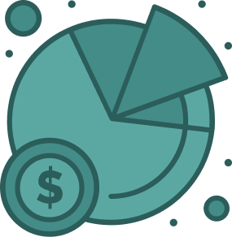

시장추구 알고리즘 소개
퀀트 2.0
시장추구 알고리즘은
시장추구 알고리즘은
안정적인 종목으로
큰 수익을 내기 위해
큰 수익을 내기 위해
시총대비 저평가된 종목 중,
실적 모멘텀이 발생한 종목을
학습하여 추천합니다.
실적 모멘텀이 발생한 종목을
학습하여 추천합니다.

| 구분 | 성장추구 | 가치추구 | 시장추종 |
|---|---|---|---|
| 최고수익률 | 23.3% | 23.3% | 23.3% |
| 1년수익률 | 321.10% | 321.10% | 321.10% |
| 6개월수익률 | 23.3% | 23.3% | 23.3% |
| 최근1년승률 | 23.3% | 23.3% | 23.3% |
| 상승기승률 | 23.3% | 23.3% | 23.3% |